Perforce Defect Tracking Integration Project
This manual is the Perforce Defect Tracking Integration User's Guide. It teaches the use of the Perforce Defect Tracking Integration; detailed instructions on using Perforce and your defect tracker aren't given here. If you need more information on using Perforce, please see the Perforce User's Guide, the Perforce Command Reference, or the Perforce on-line help system. If you need more information on using your defect tracking system, please see the manuals for the system or consult your defect tracking administrator.
If you're administering the Perforce Defect Tracking Integration (P4DTI), you'll need our Perforce Defect Tracking Integration Administrator's Guide. If you're installing the P4DTI, the Administrator's Guide is the place to start.
The P4DTI makes the defect tracker's records appear as jobs in Perforce. You can work with jobs more or less just as described in the Perforce manuals, and your changes are reflected in the defect tracker. This saves you having to switch between Perforce and the defect tracker to do your work. For information on how to work with jobs in Perforce, see the Perforce User's Guide.
Perforce has a mechanism for linking changelists to jobs. The P4DTI links the changelists to defect tracker issues as well, so you don't need to switch to the defect tracker and copy out information about your changes. Linking also allows you to:
The P4DTI makes the links to changelists appear in the defect tracker, making it easy to see what was done or is currently being done to resolve a defect.
See the Perforce Defect Tracking Integration Administrator's Guide for an overview of how the P4DTI works.
A typical organization might use the P4DTI in the following way:
For information about your organization's workflow policy, or how you should use the P4DTI, consult your manager or the P4DTI administrator.
If you do something in Perforce that the defect tracker doesn't allow--for example, if your action causes an error, or if it's forbidden by the defect tracker's rules--then the replicator undoes the change in Perforce when it next wakes up, and sends you an e-mail message explaining what happened. The e-mail message contains your changes, so you won't have lost them.
An example of such an e-mail message is shown in figure 1.
|
Notes on figure 1:
This paragraph gives the reason why the change to the job couldn't be replicated to the defect tracker. The code at the start of the paragraph is a unique message identifier that can be used to look up that message in section 11.2 of the Perforce Defect Tracking Integration Administrator's Guide.
In this case the problem is that <gdr@company.domain> changed the status of the job from "assigned" to "verified", but this was forbidden in the defect tracker. The remedy is to follow the defect tracker's workflow.
This section shows the Perforce job as it was after the forbidden change had been made, but before it was undone.
The P4DTI reverses all changes, even if some of them would have been allowed. For example, if <gdr@company.domain> has changed Priority from "High" to "Low" as well as Status from "assigned" to "verified" then both of these fields will be set back even though the change to Priority may have been allowed on its own.
This section gives a complete traceback at the point in the code where the problem was discovered. This traceback allows Perforce support to track down defects in the code that prevent replication. Under normal use you can ignore this.
The P4DTI undoes the change to the job, but it doesn't undo any fixes, even if it was a fix that caused the forbidden change to the job. That's because there needs to be a way to add retrospective fixes in Perforce (see section 9, "Linking already-completed work to an issue") even if the retrospective fix would violate the defect tracker's workflow.
Your organization might have a policy about which changelists to link with issues. For example, some organizations might want only the final check-in of a fix linked, and some might want all the intermediate stages linked. Your organization's policy may not allow some of the procedures in this manual; for information about your organization's policy, consult your manager or the P4DTI administrator.
Create issues in the defect tracker as normal. Each organization has its own policies for how to create issues, so if you need instructions, consult your defect tracker administrator.
You can't create issues by creating jobs in Perforce.
You can use the defect tracker to see a list of issues assigned to you in the normal way. In addition, your defect tracker might be configured to send you e-mail messages when issues are assigned to you.
You can also use Perforce to see the issues assigned to you, by setting a jobview that matches the jobs representing these issues. For detailed instructions on specifying a jobview, see the Perforce User's Guide.
The correct choice of jobview depends on which defect tracker you're using, how the P4DTI has been configured, and what workflow you use. Ask your P4DTI administrator if you have trouble specifying the jobview you want. If you're using standard fields and workflows in your defect tracker, then the jobviews in table 1 should be suitable.
Table 1. Jobviews for standard workflows and configurations
| Defect Tracker | Issues you want to see | |
|---|---|---|
Assigned to user spqr for fixing. |
Assigned to user spqr for testing. |
|
| Bugzilla | assigned_to=spqr status=assigned |
assigned_to=spqr status=closed |
This section describes how to filter jobs using a jobview. If you use the same jobview most of the time, you can set it as your user jobview. See Section 6.1, "Setting your user jobview" for instructions.
To find issues assigned to you, follow these steps:
To find issues assigned to you, enter the command p4 jobs -e "jobview" with an appropriate
jobview (see table 1).
For example, if you're using Bugzilla, then the following command displays a list of jobs that have been assigned for development to the user whose Perforce userid is "spqr":
p4 jobs -e "assigned_to=spqr status=assigned"
To find issues assigned to you, follow these steps:
You can edit an issue by editing the contents of the job in Perforce. Your changes are replicated back to the defect tracker. This procedure is useful when you want to:
If you change the issue in a way that the defect tracker doesn't allow--for example, if your action causes an error, or if it's forbidden by the defect tracker workflow--then the replicator undoes the change in Perforce when it next wakes up, and sends you an e-mail message explaining what happened. The e-mail message contains your changes, so you won't have lost them.
To change an issue, edit the job in Perforce as described in the following subsections. Depending on your organization's policies, you might need to add some text explaining why you've edited the job. (If you have made changes and have already submitted them, you need to link them to the job using the method described in Section 9, "Linking already-completed work to an issue".)
To edit an issue, follow these steps:
Figure 4. Editing a job using the Perforce Visual Client (P4V)
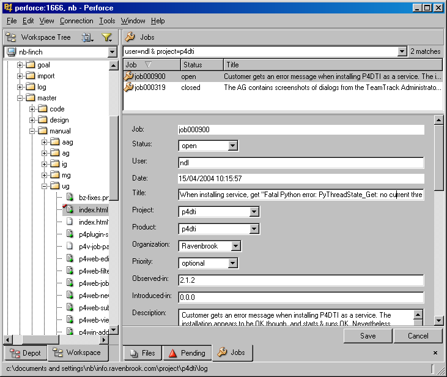 To edit an issue from the Perforce command line, enter a p4 job command and edit the job appropriately. For example, the following command opens a form in your editor that allows you to edit the job bug94:
p4 job bug94
For more information, see the Perforce User's Guide.
To edit an issue, follow these steps:
Figure 5. Editing a job using the Perforce Web GUI
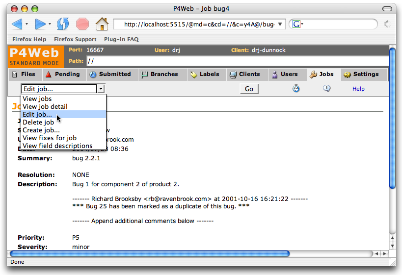The P4DTI allows you to link your work in progress to an issue. This link records your intentions and so has several advantages:
To gain these advantages, you first need to set up a user jobview as described in Section 6.1, and then create a pending changelist containing your edits and link it to a Perforce job, as described in Section 6.2 (for the Perforce Visual Client (P4V)), Section 6.3 (for the Perforce command line), or Section 6.4 (for the Perforce Web GUI). The link will show up in the defect tracker. For more information, see the Perforce User's Guide.
Note that you can only ever link a changelist with an issue once. If you link the same changelist with the same issue again using a different status value, the effect is just to change the status value.
To set your user jobview in the Perforce Visual Client (P4V), follow these steps:
To set your user jobview from the Perforce command line, follow these steps:
p4 user. To set your user jobview in the Perforce Web GUI, follow these steps:
To start work and link it to an issue, follow these steps:
You can also change the links to jobs, or set the job status, by following these steps:
To add more edits to the changelist later, drag the edits from other changelists.
To check out files for edit, drag them from the depot view.
Figure 6. Creating a new changelist and linking it to jobs
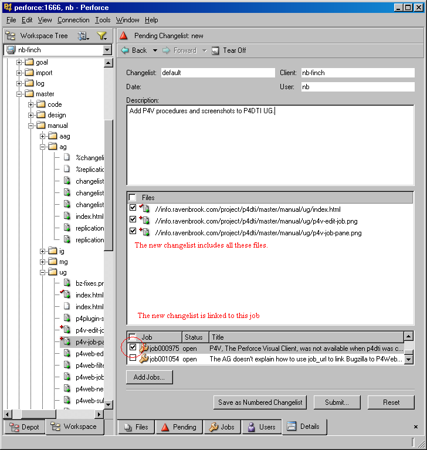 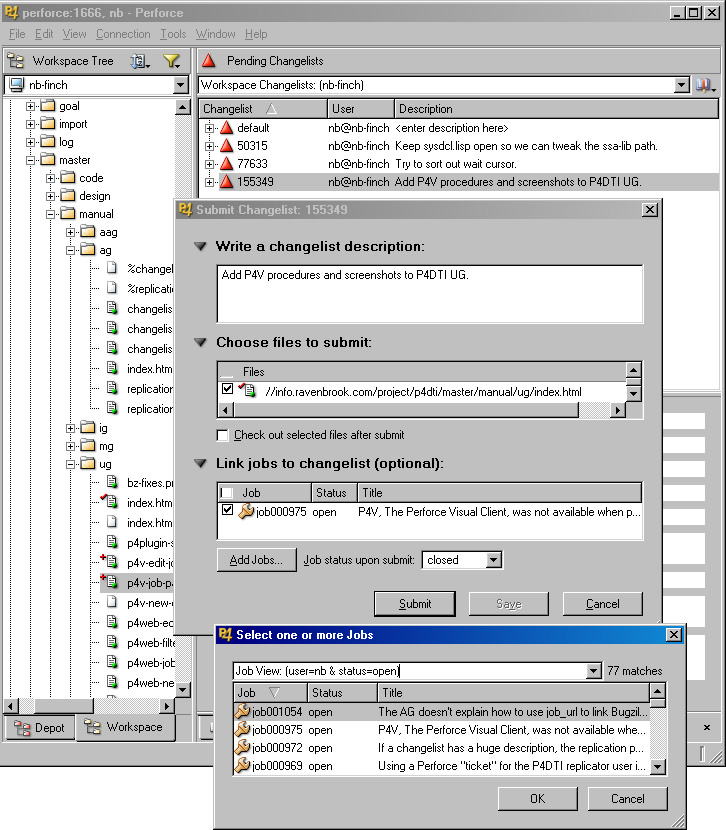To start work and link it to an issue, follow these steps:
This command opens a change specification in your editor. With the "-s" option, jobs that match your jobview appear in the text form with an "ignore" keyword (see figure 8).p4 change -s
Edit the keyword next to the names of the jobs you want linked with the change. When the change is submitted, the change is linked with the jobs, and the job statuses change to match this keyword. Jobs that have the keyword "ignore" won't be changed or linked.
For example, your jobview might match three jobs which show up as
shown in figure 8. (If it doesn't look like
this, then either you don't have a jobview set or else you forgot the
-s option).
Figure 8. Jobs section of a new change form.
Jobs: bug1 ignore # The division operator gets its bug2 ignore # There's no delete command bug3 ignore # When -O3 is specified, some loo |
Suppose that your change fixes bug1, partially fixes bug2 (so leaving it open), and is unrelated to bug3. Then you'd edit the form to look as shown in figure 9.
Figure 9. Jobs section of a change form, showing intended effect of submitting the changelist.
Jobs: bug1 closed # The division operator gets its bug2 open # There's no delete command bug3 ignore # When -O3 is specified, some loo |
When you submit a pending changelist later, the status of the linked jobs changes as specified. (To submit a pending changelist, use a command like p4 submit -c changelist).
You can also add more links to jobs by using the following command:
p4 change -s changelist
where changelist is the number of the changelist you created above.
To link pending changelists with jobs, use a command like the following:
p4 fix -s resolved -c 3004 bug34 bug94
(where "resolved" is the status you want the jobs to change to, "3004" is the pending changelist number, and "bug34" and "bug94" are the jobs you want to link the changelist with).
To add more edits to the changelist later, use the -c option to many Perforce commands, or move the edits from other changelists using the p4 reopen -c command. For more information, see the Perforce User's Guide.
To remove links, use a command like the following:
p4 fix -d -c 3004 bug34 bug94
(where "resolved" is the status you want the jobs to change to, "3004" is the pending changelist number, and "bug34" and "bug94" are the jobs you want to remove the link from).
Figure 10. Selecting jobs to link when submitting or creating a change from the command line with a jobview set
# A Perforce Change Specification.... Change: new Client: newton-skylark User: newton Status: new Description: <enter description here> Jobs: bug3 ignore # When -O3 is specified, some loo bug1 ignore # The division operator gets its bug2 ignore # There's no delete command Files: //depot/project/editor/src/buffer.c # edit //depot/project/editor/src/buffer.h # edit |
To start work and link it to an issue, follow these steps:
default. You will edit this and create a new pending changelist. See figure 11.
You can also add more links to jobs by selecting the changelist (from the Pending Changelists page) and repeating the steps above.
Figure 11. Creating a new changelist and linking it to jobs
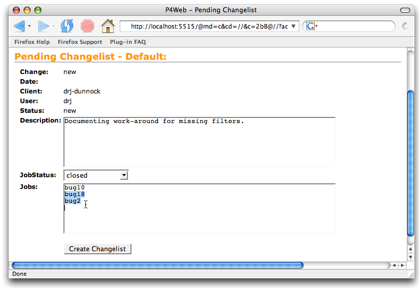You can submit a change and link it to an issue without changing the issue status. This procedure allows an organization to track partially completed work that's related to an issue, as well as the final submission that resolves it.
Note: Your organization's policy regarding links between changes and issues might not allow you to use this feature. For more information, consult your manager or P4DTI administrator.
If you're linking intermediate stages of changelists with issues, you probably don't want to change the status of the issue. The way to do this is to link the changelist with the issue as usual, but with the same status as the issue currently has. For example, in Perforce you can use the p4 fix command with the "-s" argument set to the current status of that issue. When linking the final check-in, the "-s" argument is something like "fixed" or "resolved" or perhaps "closed".
To submit partial work while keeping issues, follow the procedures described in Section 8, except that, when fixing the job, set the status to the job's current status, rather than to the resolved status.
Once you have completed work on a job, you can use Perforce to submit the associated changelist, link the changelist to the job, and change the job status, all at the same time.
Make sure your jobview is set before you follow the procedures in this section. See Section 6.1, "Setting your user jobview".
To submit completed work and resolve issues, follow these steps:
Figure 12. Submitting a changelist from the Perforce Visual Client (P4V)
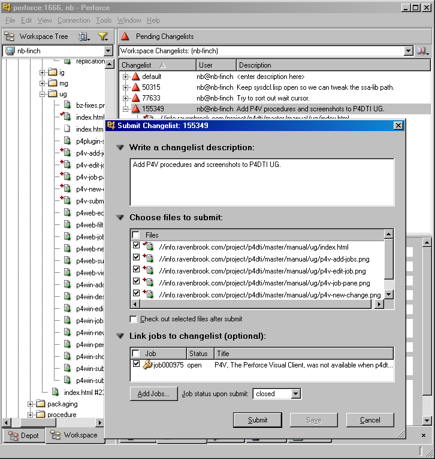If the edits you want to link are on your default changelist, follow these steps to submit completed work and resolve issues:
This command opens a change specification in your editor. With the "-s" option, a list of jobs that match your jobview appears in the text form with an "ignore" keyword. (See figure 8 for an example.)p4 submit -s
If the edits you want to link are on a pending changelist, follow these steps:
Submit the changelist by entering the command
p4 submit -c changelist
To submit completed work and resolve issues, follow these steps:
When you submit your changelist, the status of the jobs you left in the form is updated to match the JobStatus field and the changelist is linked with them with that status.
Figure 13. Selecting jobs to link when submitting from Visual Studio
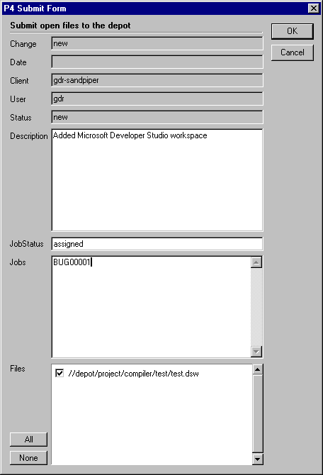To submit completed work and resolve issues, follow these steps:
Figure 14. Selecting jobs to link when submitting from the Perforce Web GUI with a jobview set
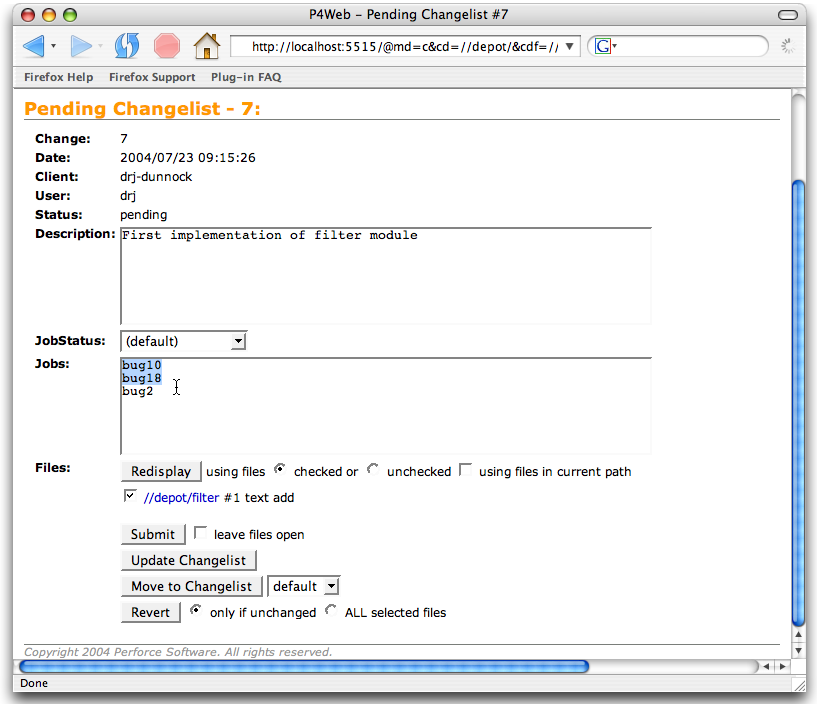You can use Perforce to link a change that you've already made with a issue you've been assigned. For example, suppose you realize that a change you made yesterday also resolves some issues you've been assigned to work on today. You can record this information in the defect tracking system and get rid of those issues.
Note: The defect tracker's workflow might prevent you from linking to an issue that you don't own. If you try, the P4DTI removes your link and sends you e-mail.
It is not possible to link already-completed work to an issue in P4V 2005.2.
To link already-completed work to an issue from the Perforce command line, enter a p4 fix command. For example, the following command links changelist 4096 with issues bug23 and bug1239 and changes their status to "resolved":
p4 fix -s resolved -c 4096 bug23 bug1239
If you don't specify a "-s" option, the issue status is changed to "closed".
You can use Perforce or the defect tracker to see the changes resulting from an issue, as described in the following subsections. This procedure is useful if you need to:
To find the changes linked to an issue, follow these steps:
Figure 15. Finding linked changes from the Perforce Visual Client (P4V)
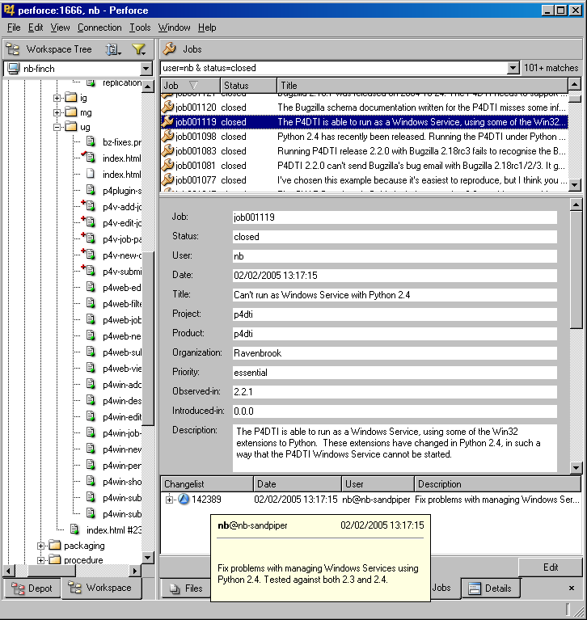Figure 16. Viewing changelist details from the Perforce Visual Client (P4V)
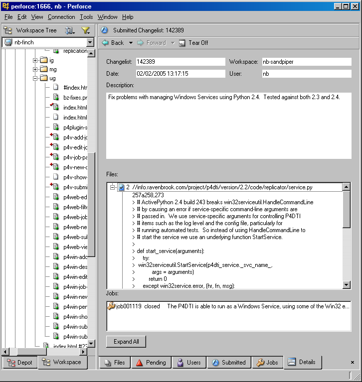 To find the changes linked with an issue, enter a p4 fixes command. For example, the following command lists the changes resulting from issue bug34:
p4 fixes -j bug34
For details, see the Perforce User's Guide.
To find the changes linked to an issue, follow these steps:
Figure 17. Finding linked changes from the Perforce Web GUI
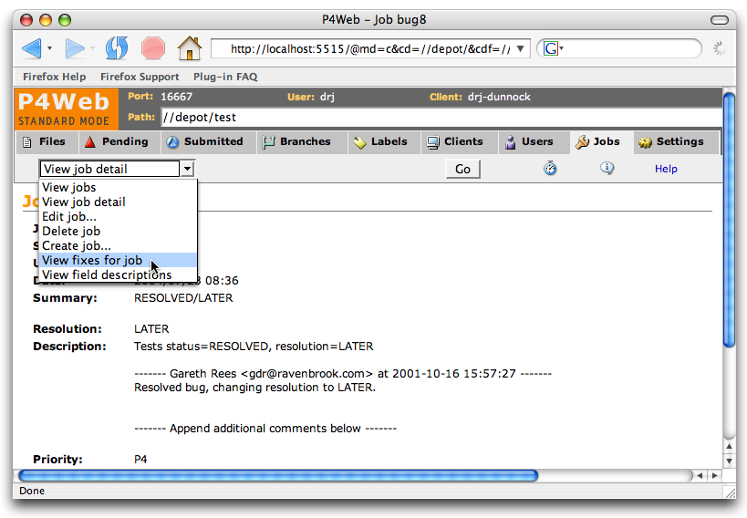In Bugzilla, look in the "Perforce replication" section of the bug form to find the changes linked with an issue (see figure 18). If you don't see the Perforce replication section, contact your P4DTI administrator.
Figure 18. The changes linked with a Bugzilla bug
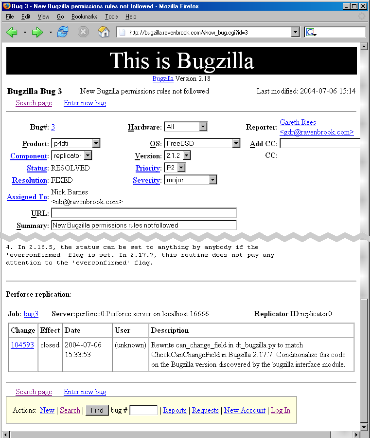You can use Perforce to see the issues linked with a changelist.
To find the issues linked with a change, follow these steps:
Figure 19. Finding linked issues from the Perforce Visual Client (P4V)
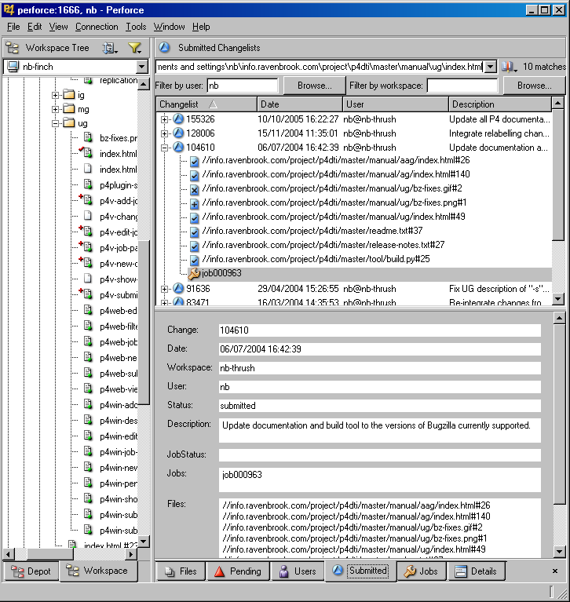 To find the issues linked with a change, enter a p4 fixes command. For example, the following command finds the issues linked with changelist 4339:
p4 fixes -c 4339
For details, see the Perforce User's Guide.
To find the issues linked with a change, follow these steps:
You can use Perforce to find out which files were changed in order to fix an issue. To do this, you first need to find out the changelists linked with the issue, as described in Section 10, "Finding the changes linked to an issue".
To find the files affected by an issue, follow these steps:
To find the files affected by an issue, follow these steps:
Enter a p4 describe command at the Perforce command line. For example, the following command outputs a list of the files that were checked in to fix the issue and the diffs for those files:
p4 describe 4339
For more information, see the Perforce User's Guide.
To find the files affected by an issue, follow these steps:
You can use Perforce to find out which issues are linked with particular files. This is very useful for finding out which issues have affected files in the past.
It is not possible to find the jobs linked to a file or set of files in P4V 2005.2.
To find the issues linked to a file or set of files, enter a p4 fixes or a p4
jobs command at the Perforce command line. For example, the
following command lists the changelists with fixes for the files with
a ".c" extension in the "/depot/foo/bar" directory:
p4 fixes //depot/foo/bar/*.c
The following command lists all the issues that have been linked to all the files with a ".c" extension in the "/depot/foo/bar" directory:
p4 jobs //depot/foo/bar/*.c
For more information, see the Perforce User's Guide.
To find the issues linked to a file or set of files, follow these steps:
Figure 20. Finding issues that affected certain files from the Perforce Web GUI
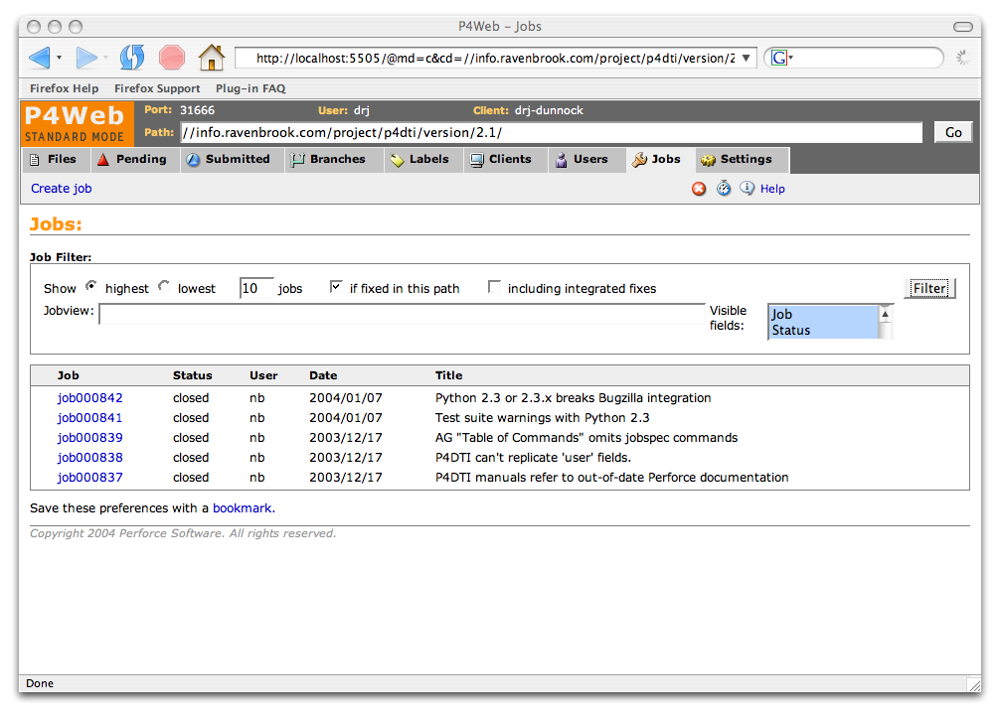If you've been linking your work with issues as described in Section 6, you can find out which issues you're working on. This procedure is useful when, for example, you are resuming work on a project after a few days away and can't quite remember which issues you were last working on.
To find who's working on an issue, or issues you were working on in a different workspace, see Section 15, "Finding out where an issue is being worked on and by whom".)
To find the issues you're working on, follow these steps:
To find out what you were working on, use a combination of the p4 changes and p4 fixes commands. For example, the following command finds your pending changelists:
p4 changes -s pending | grep username
The following command then shows the issues you were working on in that changelist:
p4 fixes -c changelist
To find the issues you're working on, follow these steps:
If other people at your organization are linking their work with issues as described in Section 6, you can find out who's working on an issue and in which workspace. This procedure is useful when you know that someone is working on an issue but you don't know who or where their work is--they might be on vacation, or have left the company, or perhaps it's you and you've just forgotten all about it.
To find out which issues you were working on in a particular workspace, see Section 14, "Finding the issues you're working on".
To find out where an issue is being worked on, follow these steps:
To find out where an issue is being worked on, use a combination of the p4 fixes and p4 changes commands. For example, the following commands list the changelists that are linked to bug743 and the list of pending changelists:
p4 fixes -j bug743 p4 changes -s pending
Any changelists that appear in both lists are work in progress, and this tells you the user and client (workspace) where the work is happening.
Once you have the P4DTI running successfully and all developers are conscientiously creating fix records in Perforce (see sections 6 to 9), then it is possible to automatically generate lists of fixed and open issues for a release.
To discover which issues have been fixed in a release, issue the command:
p4 fixes -i files-contributing-to-the-release
To specify the files contributing to the release:
//depot/project/foo/release/2.7/.... //depot/project/foo/version/2/...@12345. //depot/project/foo/...@release-2.7. This generates a list of fixes in the source contributing to the release. From this list you need to extract the fixes that actually closed the job, because there may be fixes that don't actually close the job; see section 7. Then you need to remove duplicate entries, because there may be several fixes that close a job. On Unix systems you can do this with a command like:
p4 fixes -i files-contributing-to-the-release | grep -v '\)$' | cut -f 1 -d ' ' | sort -u
if jobs are closed by fixing them to 'closed', or with a command like
p4 fixes -i files-contributing-to-the-release | grep '(closed-state)$' | cut -f 1 -d ' ' | sort -u
if jobs are closed by fixing them to closed-state. (There
are two alternatives here because the p4
fixes command has one format for fixes to "closed" and another
for fixes to any other status.)
This allows you to work out the jobs fixed in a release of a product. Then:
| [GDR 2000-05-03] | "Requirements and Use Cases for Perforce/Defect Tracking Integration"; Gareth Rees; Ravenbrook Limited; 2000-05-03. |
| [Perforce +2007-05-21a] | "Perforce 2007.2 User's Guide"; Perforce Software; 2007-05-21; <http://www.perforce.com/perforce/doc.072/manuals/p4guide/>, <http://www.perforce.com/perforce/doc.072/manuals/p4guide/p4guide.pdf>. |
| [Perforce +2007-05-21c] | "Perforce 2007.2 Command Reference"; Perforce Software; 2007-05-21; <http://www.perforce.com/perforce/doc.072/manuals/cmdref/>, <http://www.perforce.com/perforce/doc.072/manuals/cmdref/cmdref.pdf>. |
| 2000-08-10 | RB | Created placeholder. |
| 2000-10-15 | LMB | Added section titles; copied in some use cases as comments. |
| 2000-11-10 | RB | Added scads of text with rough documentation of many of the use cases so that LMB can work on real documentation. |
| 2000-11-26 | LMB | Fixed Sections 4.5 and 4.6. Started writing Section 4.15. Started writing Section 2. |
| 2000-11-26 | RB | Changed "document" to "file" throughout. |
| 2000-11-30 | RB | Updated references to Perforce 2000.1 to 2000.2, now that the AG says to use 2000.2 |
| 2000-12-04 | RB | Added screenshots and text figures at various places suggested by LMB. |
| 2000-12-05 | RB | Added brief instructions for using the new Show Fixes button in the Perforce Visual Client (P4V). |
| 2000-12-06 | RB | Corrected the instructions for "p4 submit" to "p4 submit -s" and removed unnecessary figures for the previously different "p4 change -s". |
| 2000-12-06 | RB | Added overview sections. |
| 2000-12-06 | RB | Complete re-organization of the manual into more logical steps. |
| 2000-12-07 | RB | Added table of contents. Renumbered figures. |
| 2000-12-07 | RB | Removed note about the "ignore" bug in "p4 submit -s" and "p4 change -s" as it's now fixed in the Perforce server level we require. |
| 2001-01-02 | GDR | Section 5.1 suggests jobviews that will work in both the TeamTrack and Bugzilla integrations. Made reference style consistent with AG. Added section 2.5 asking readers to upgrade to 2000.2. |
| 2001-01-05 | LMB | Made lots of copyedits. Removed ellipses, since they don't conform to Perforce style. Added glossary entries. |
| 2001-01-07 | LMB | Finished improving as per my intuition. Incorporated some comments from TC@perforce (most weren't applicable to the UG). Finished the glossary. |
| 2001-01-08 | LMB | Deleted comments, title material, and Sections A and B in preparation for handoff to Perforce. |
| 2001-01-21 | LMB | At GDR's request, replaced title material and Sections A and B. |
| 2001-01-22 | LMB | As per TC@perforce's request: started every numbered step with a concrete verb; commented out Section 2.1 and Figures 3 and 4; renumbered figures; renamed Section 2.3; added necessary verbiage to all procedure lead-ins. Re-read TC@perforce's requests more carefully; put Section 2.1 back, moved Section 3 to Section 2.2, and renumbered all headings. At Richard's request, re-added figure 4 and renumbered figures. |
| 2001-02-01 | RB | Rewrote introduction to section 2 to provide description of the requirements the software meets without sounding like "marketing". Updated references to Perforce manuals to version 2000.2. |
| 2001-03-02 | RB | Transferred copyright to Perforce under their license. |
| 2001-04-11 | RB | Updated version to 1.1. |
| 2001-04-20 | GDR | Added instruction to select status when adding a fix to a submitted changelist in P4Win. |
| 2001-05-22 | GDR | Added section "Finding out which issues have been fixed in a release". |
| 2001-06-08 | GDR | Added reminder about the -s option to p4 change and p4 submit. Gave example showing how to fill out the change form. |
| 2001-07-14 | GDR | Improved glossary. Gave Bugzilla equal billing with TeamTrack by adding a screenshot and specifying appropriate jobviews. References to Perforce 2000.2 now refer to 2001.1 where appropriate, since we now support Perforce 2001.1. |
| 2001-09-14 | GDR | Added section explaining how the P4DTI enforces the defect tracker's rules. Explained why fixes aren't deleted even if they cause an illegal change. |
| 2003-05-21 | NB | de-TeamTracked. |
| 2003-12-17 | NB | Updated Perforce manual references to 2003.1. |
| 2004-07-22 | DRJ | Added instructions for P4Web (2004.2 P4Web can now manipulate jobs). |
| 2004-07-28 | DRJ | Removed section 15.3 pending P4Web improvement. |
| 2005-10-17 | NB | Replaced P4Win instructions with those for P4V 2005.1. |
| changelist | An atomic change transaction in Perforce. |
| fix | A link between a job and a changelist. |
| issue | A user-defined unit of work tracked by the defect tracker. |
| job | A unit of work tracked by Perforce. |
| jobview | A string used to find jobs that match particular criteria. |
| pending changelist | A changelist that has not been submitted. |
| P4DTI | Perforce Defect Tracking Integration. The software that integrates Perforce Software's fast configuration management system with defect tracking systems. |
| replication | The operation of copying data between a defect tracker and a Perforce server in order to keep each one up to date with changes made in the other. Replication allows developers to do their routine defect resolution work entirely from their Perforce client, without needing to use the defect tracker's interface. It also allows developers to relate their changes to defect tracking issues. |
| replicator | A process that copies (replicates) data between a defect tracker and a Perforce server in order to keep each one up to date with changes made in the other. |
| workflow | A set of rules that control who can do what to which issues. |
This document is copyright © 2001 Perforce Software, Inc. All rights reserved.
Redistribution and use of this document in any form, with or without modification, is permitted provided that redistributions of this document retain the above copyright notice, this condition and the following disclaimer.
This document is provided by the copyright holders and contributors "as is" and any express or implied warranties, including, but not limited to, the implied warranties of merchantability and fitness for a particular purpose are disclaimed. In no event shall the copyright holders and contributors be liable for any direct, indirect, incidental, special, exemplary, or consequential damages (including, but not limited to, procurement of substitute goods or services; loss of use, data, or profits; or business interruption) however caused and on any theory of liability, whether in contract, strict liability, or tort (including negligence or otherwise) arising in any way out of the use of this document, even if advised of the possibility of such damage.